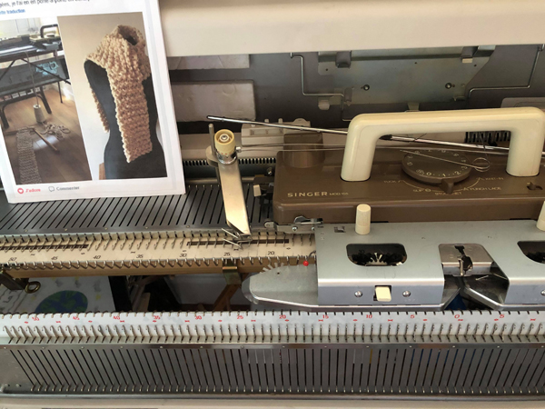
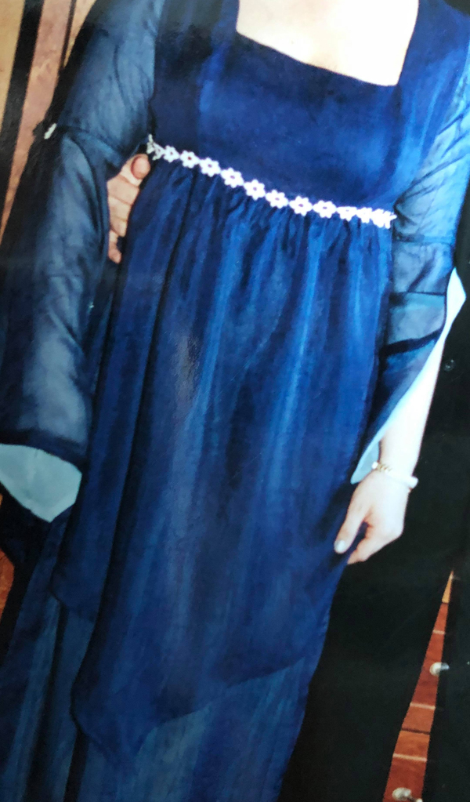
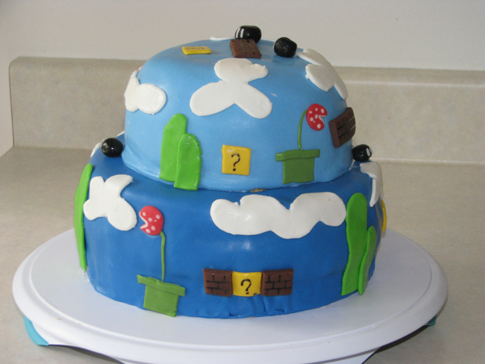
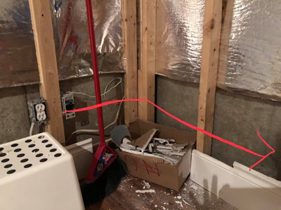
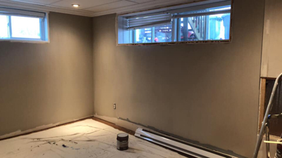
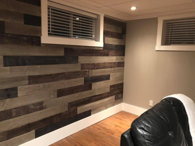
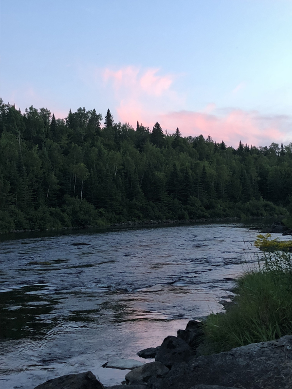
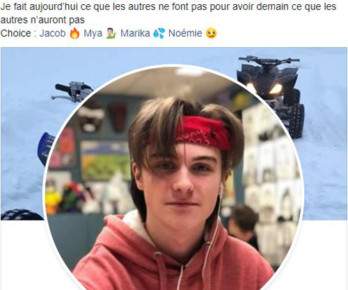
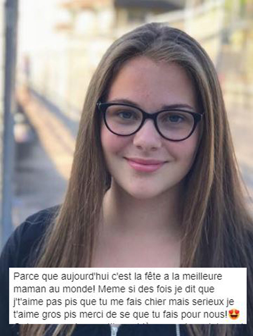
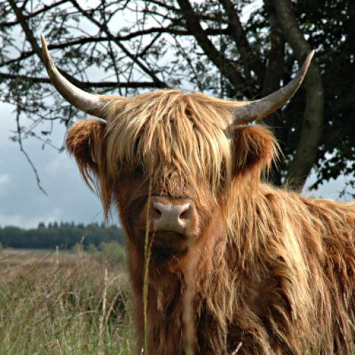

MES ETUDES
Février 2019 à ce jour Attestation d’études collégiale (A.E.C.) Design et intégration web
Gegep de Trois-Rivières, Trois-Rivières, Quebec, Canada
Août 2000 à Janv. 2002 Diplôme d’études professionnelles (D.E.P.)Dessin de patrons
École des Métiers-des-Faubourgs-de-Montréal, Montréal, Quebec, Canada
1993 à 1996 Techniques AdministrativesOption Finance
Collège de Sherbrooke, Sherbrooke, Quebec, Canada
1988 à 1993 Diplôme d’études secondaires
Polyvalente l’Escale, Asbestos, Quebec, Canada
Maman de 3 merveilleux enfants de 8, 14 et 16 ans, également responsable d'un service de garde en milieu familiale depuis bientôt 7 ans. J’ai toujours eu une grande passion pour le dessin,
la création ainsi la confection en tout genre. Étant une fille de défis, je me suis inscrite à cette formation afin d'élargir mes horizons et ajouter des cordes
à mon arc mais également
pour conserver mon mental ainsi mes neuronnes en bonne santé
À 16 ans... Choisir ce que j'allais faire de ma vie entière ? Impossible!! >Trop de choses m'allument, trop de domaines me passionnent
Ne sachant pas trop vers quoi me diriger, j'ai opter pour une une Techniques en administration option finance. Choix guider par ma famille, je devais rester dans les rangs...
(secrétaire, compatble ou autre travail de bureau)
Après quelques mois à travailler dans ce dommaine, je me suis rapidement apperçu qu'il manquait de couleur dans mon emploi seule avec mon écran, mon clavier et mes piles de chiffres
Je suis donc retourner sur les banc d'école pour faire ce qui me passionne moi !!! C'est à ce moment que j'ai fait mon D.E.P. en dessin de patrons. J'ai travaillé dans ce domaine environ 7 ans,
jusqu'à ce que l'importation prenne le dessus sur la production local et que nos usines de confections ferment leurs portes les unes après les autres. Étant en région je me suis rapidement
retrouvé à faire que le contrôle de qualité du "MADE IN BANGDLADESH". L'horreur!!!
Alors, suite à ma dernière grossesse, j'ai décidé d'allier mes passions et mon amour pour les enfants et ainsi, travailler avec les petits êtres qui ont soif d'apprendre. C'est donc à ce moment
que j'ai ouvert mon service de garde en milieu familial.
Me voila alors rendu à un tournant où j'aime toujours travailler avec mes petites boules d'amour mais il me manque de défis à reléver...

Retour en haut
MES LOISIRS
Comme je suis une amoureuse - passionnée, des loisirs, j'en ai plus d'un. J'adore tout ce qui est création, confection et constructions en tout genres.
De la pâte à modeler à la confection de vêtements, en passant par la déco, les rénos et le jardinage, rien ne m'arrête
J'aime tout ce qui est manuel, du simple crayon à la scie à onglet, en passant par les aiguilles et les pinceaux. En voici donc quelques-uns:
Tricot main

Tricot machine
Pour un peu plus de rapidité, les opportunités sont infinies


Couture; patron & confection

cuisiner

Dessin...
Plomb, pastel, aquarelles, acrylique et feutre, j'aime tout les médias


Réno & réparation
De la démolition à la reconstruction...
Ici... je voulais simplement enlever la fausse brique du mur et repeindre. Oh! ça ne sait pas passer comme prévu.
Oups, le mur a décidé de suivre la brique alors j'en ai profité pour refaire l'isolation et changer les prises électriquess d'endroit.
Résultats de perséverance intense car je n'avais jamais eu d'aussi gros projet, je me contentais de petits travaux.
Au fils du temps je peux dire que j'adore rénové et plus le défis est intense, plus j'ai du plaisirs à le réaliser





Voici donc un résumé de mes loisirs
- Tricot-main
- Tricot-machine
- Couture
- Patron
- Confection
- Réparation
- Cuisiner
- Arts
- Construction
Retour en haut
MES SPORTS
Je suis plutôt sport en plein air de type randonnée, raquette, vélo, pêche que je peux également faire avec mes enfants
La randonnée en montagne
La randonnée en montagne fait partie de nos activités estivales favorites, beau temps, mauvais temps. Mon mini et moi
adorons explorez de nouveaux sommets à chaque semaine
Voici quelques monts que nous avons visité jusqu'à maintenant:
Sommets favoris
| Nom du mont |
Ville |
Altitude |
| Mont Ham |
Ham-Nord |
713 m |
| Mont Chapman |
Stoke |
658 m |
| Mont Chauve |
Orford |
599 m |
| Mont St-Hilaire |
St-Hilaire |
413 m |


La pêche en rivière
Quoi de mieux pour refaire le plein de zénitude que te taquiner le poisson? Pour nous c'est le sport familial par excellence. Quelle fierté pour mes garçons de cuisiner et savourer leurs prises
Mes grands curieux aiment bien ouvrir les poissons pour regarder ce qu'ils ont manger, s'ils sont male ou femelle (en regardant s'il y a des oeufs a l'intérieur) et son fasciné par la grosseur de leur mini coeur qui bat relativement longtemps.


Retour en haut
MES REVES
Mes enfants
Mon premier et également mon plus grand est de réussir à faire de mes adorables enfants des adultes heureux, aimant, responsables et surtout équilibrer dans ce monde instable.



Ma maison
Habitez une grande maison centenaire, sur une fermette, à 2 étages avec un grenier accessible (L'accès au grenier est très important j'ai du être une chauve-souris dans une autre vie).
Extérieur assez grand pour faire un immense potager qui fournirait tout mon entourage en légumes frais et de la place pour quelques vaches (les highland sont tellement mes préféré).
Idéalement assez loin de la civilisation mais pas trop pour que mes enfants est facilement accès a leur vie sociale tout d'abord par la route mais également via internet.



Vie professionnelle
Toujours être animé par la passion de ce que je fais. C'est bien parti pour ça.
Retour en haut